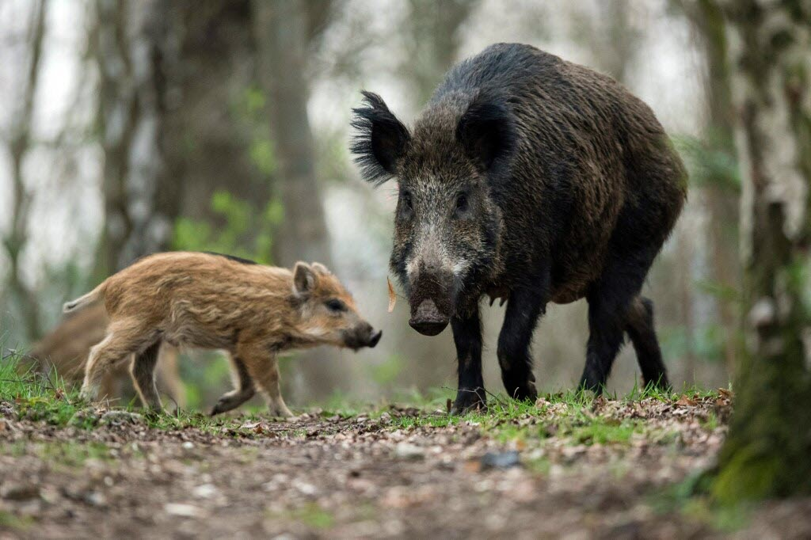

Bonjour à tous !
Aujourd’hui, nous avons découvert le sanglier, un animal fascinant qui vit dans les forêts denses. Il se déplace en famille, appelée une harde, dirigée par la laie. Le sanglier est omnivore et mange des racines, des glands, des fruits, des céréales, des champignons, des escargots et des vers de terre. Grâce à son groin, il fouille le sol pour trouver sa nourriture.
La laie donne naissance à 4 à 10 petits, les marcassins, reconnaissables à leurs rayures brunes et beiges qui leur permettent de se camoufler. Nous avons aussi regardé des vidéos montrant comment ils vivent et interagissent dans leur environnement.
C’était passionnant, et nous avons hâte d’explorer d’autres animaux et leurs secrets !

Les élèves de CE2